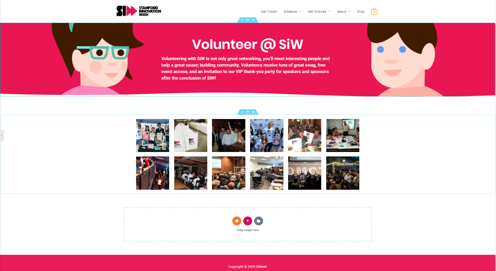
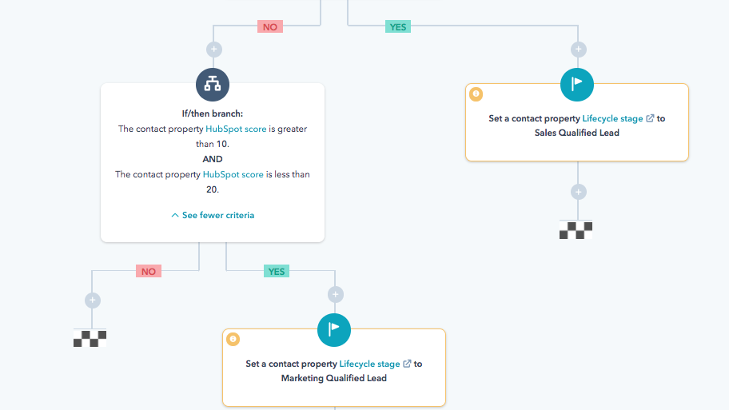

Project: Stamford Innovation Week Digital Experience
Year: 2019
Category: Digital Experience, Design, Marketing
Synopsis: I was brought on to work with Stamford Innovation Week (a week long cultural event series centered around innovation, technology, and entrepreneurship) to expand their digital presence. Over the course of a few months, I expanded the organization's marketing efforts, built out web experiences, and developed process workflows which contributed to the events success and growth.
Process: Web Design
The SiWeek website would serve to be a centralized content hub for any prospective event goers. That being said, it was important for the experience to convey the information that organizers wanted and was useful for. This required a great amount of communication between key stakeholders to understand exactly what information was needed.
In addition, I made sure to adhere to SiWeek’s branding guidelines, staying consistent with the initial design.
Tools
The SiWeek team had opted to use Elementor as our primary design tool. Some of the advantages behind using Elementor was the ability to make quick changes on the fly. With details always subject to change, this factor enabled me to act quickly on new information coming from planning committees and stakeholders.
Process: CRM Automation
Running an ongoing events program meant that our email list would be saturated with plenty of updates. I wanted to develop a framework that could contribute to a more precise targeting for our audience, while driving more actions, and less attrition.
The first stage was segmenting our users from existing registration data. Doing so would allow us to target our promotions based on interest. So for example, if someone was interested in a python conference event, they may also be interested in attending a blockchain conference.
To do this, I gathered the existing registration data and started segmenting them from within hubspot's audience tools. Then I would categorize the event offerings based on subject relevance towards each other and registered users. From this point, I was able to get an idea how to cross sell and upsell between users.
From this point on we brought in a Hubspot professional to assist in the implementation.
